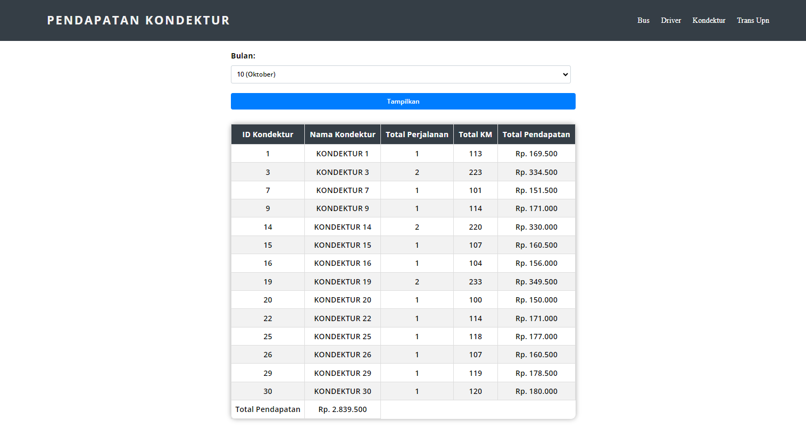

I'm Muhammad Ariq Hawari Adiputra
and I'm a
About me

Informatics student of UPN Veteran East Java with strong interest in DevOps Engineer, back-end development, data analysis, and database management. Has a strong foundation in programming, with experience learning C/C++, PHP, Javascript and NextJs Tailwind framework and MongoDB as a database. Currently focusing on DevOps Engineer and Back-End Developer. Experience collaborating on student projects for approximately three years, demonstrating good teamwork skills and effective communication. Eager to improve his skills and make a positive impact in the technology industry.
Download My CVMy services
Back-End Developer
Network Topology
DevOps Engineer
My skills
My Skill.
I am very interested in learning programming languages. Programming is one of my passions. Currently, I am familiar with C/C++, HTML/CSS, PHP, Javascript and using NextJS Tailwind Framework, as well as MongoDB as a database. I also have experience deploying apps using Docker Compose and Kubernetes. Testing using Jenkins and monitoring App using prometheus.
My GithubRecent Project
AMUTS Ayo Mungut Sampah
Ayo Mungut Sampah (AMUTS) is an application that was initiated by the awareness of the waste problem that is damaging the environment around us. Polluted rivers and clogged sewers are the background of this app. The impact is felt with the emergence of mosquitoes in the neighbourhood, as well as the health problems of the affected communities. AMUTS aims to increase public awareness in disposing waste properly, especially in landfills, by offering incentives in the form of financial rewards.
The AMUTS application was developed using Javascript programming language with NextJs framework and Tailwind as its CSS styling tool. MongoDB database is used to store and manage incoming data. This project implements RestAPI which allows users to login using their GitHub account. In developing this application, my focus was on the backend and operational management (DevOps). Features include an admin login feature, as well as Create, Read, Update, and Delete (CRUD) functions that allow efficient data management.
Tech Stack : JavaScript, Tailwind, MongoDB, RestAPI
Deploy Karsajobs and Ecommerce via Kubernetes with Jenkins for Testing
and Prometheus for Monitoring
Our DevOps project aims to improve the efficiency and performance of KarsaJobs and Ecommerce applications. We use Kubernetes as the main platform for application deployment and management. The application deployment process is done through container management with images uploaded to GitHub Packages, ensuring availability and efficient management.
We automate testing using Jenkins, ensuring any code changes are thoroughly tested before deployment in the production environment. Jenkins helps us identify and fix potential issues before they reach end users. Additionally, we use Prometheus to monitor application performance in real-time, providing critical information to quickly detect and address issues before they have a major impact. With the implementation of this DevOps methodology, we managed to accelerate application delivery, improve quality, and be responsive to system-wide improvement needs on the KarsaJobs and Ecommerce application management projects.
Tech Stack : Windows Subsystem Linux (WSL), Docker, Kubernetes, Jenkins, Prometheus, Grafana
$mall Cashier
Small Cashier is a cashier website that is designed to help manage sales transactions easily and efficiently. This website provides features features that simplify the checkout process and shopping basket management using the jQuery library. In terms of user features, Small Cashier allows users to checkout process quickly and practically. Users can add products to the shopping cart by clicking on the add or subtract button using the functions provided by jQuery. buttons using functions provided by jQuery. This makes it easier for users to manage the number of products they want to buy before doing the checkout process.
Meanwhile, in terms of features for admins, Small Cashier provides CRUD (Create, Read, Update, Delete) functions that allow admins to manage products easily. Admins can add new products to the database, view a list of available products, change product information, and delete products. available products, modify product information, and delete products that are no longer needed. anymore. With this feature, the admin can perform inventory management effectively and efficiently. and efficiently. Small Cashier is the right solution for companies or small businesses that need a reliable cashier system. companies or small businesses that need a reliable and customisable cashier system. their needs.
Tech Stack : HTML, CSS, PHP, MySql, JavaScript
Classification of Heart Disease expert system using certain factor
method
The Lung Disease Diagnosis Expert System website is an online platform that uses the Certainty Factor method to help users diagnose lung diseases. Users are asked to select symptoms experienced through a user-friendly interface. The expert system will analyse the selected symptoms and classify the type of lung disease that may be experienced based on the certainty factor of each possible disease. The website provides an easy and interactive user experience, allowing users to get a useful initial diagnosis before consulting a medical professional.
This expert system is very useful for individuals who suspect lung health problems. By using the Certainty Factor method, users can obtain a more accurate diagnosis based on the symptoms they select. The information presented on this website can help users understand their health conditions better and provide initial guidance before seeking medical help.
Tech Stack : HTML, CSS, PHP, JavaScript, MySql, Bootstrap

TransUPN
Trans UPN is a website developed for transport management. This website is designed to facilitate transport management by involving drivers in the process. Through Trans UPN, drivers will receive a task to cover a certain distance and get a result or income that corresponds to the length of the distance covered in kilometres. In addition, Trans UPN also provides a revenue filter feature per day with different driver data. This allows users to view and analyse the daily revenue of each driver separately. This feature helps management in evaluating driver performance, as well as making it easier to monitor and manage payroll efficiently.
Tech Stack : HTML, CSS, PHP
Code
UI/UX Desaign With Figma
FIFADVENTURE is a UI/UX design project that uses Figma application to create an attractive user interface and intuitive user experience. The app is designed specifically for tent rental, with users using the mobile app to browse the tent catalogue, checkout, and receive notifications on the rental status. On the admin side, there is a website that allows rental management, including viewing orders, managing stock, and sending rental confirmations to users. With good design, FIFADVENTURE aims to provide a pleasant experience for users and simplify the tent rental process.

Topologi Jaringan
In the final project on network topology using Packet Tracer application, we faced the challenge of setting up an effective connection between two different routers with various devices and different IP addresses. Our goal was to ensure that the IP addresses and IP gateways were interconnected so that communication could occur smoothly.
To achieve this, we used the IP configuration on each device and set the routing appropriately. We connected the devices to both routers using a network cable and set the appropriate IP addresses. Next, we used the IP route command to ensure that the connected IP address could communicate with other devices through different routers. With these settings in place, we were able to successfully send a ping from device 1 through a different router, ensuring good connectivity in our network topology.